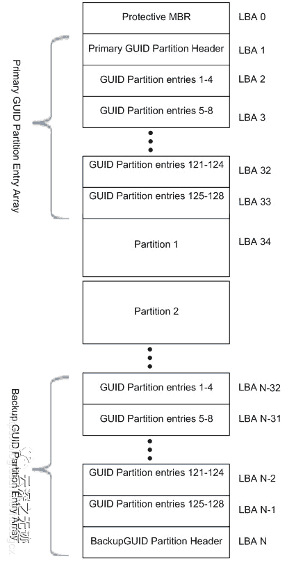
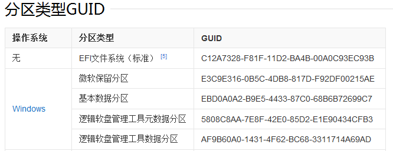
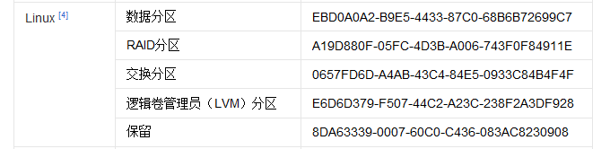
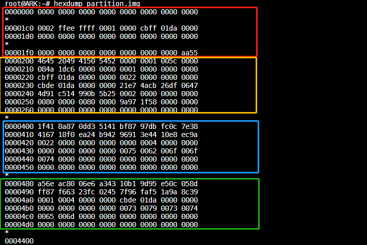
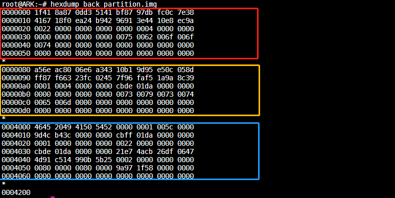

8.3.1. gpt分区表笔记
gpt分区表中有一个比较重要的概念是LBA, 翻译为中文可解释为逻辑区块地址。是描述存储设备上数据所在区块的通用机制，一般用在硬盘或者SD卡这种记忆设备，我们俗称扇区
8.3.1.1. GUID以及分区表
MBR分区方案
传统的分区方案是将分区信息保存在磁盘的第一个扇区中的64个字节中，每个分区项占16个字节。由于MBR扇区只有64个字节用于分区表，所以只能记录4个分区信息，这就是硬盘主分区数目 不能超过4个的原因，后来为了支持更多的分区引入了扩展分区及逻辑分区的概念，但每个分区项仍用16个字节存储。
mbr分区有一个比较大的缺陷是不能支持超过2T容量的磁盘，因为这一方案用4个字节存储分区的总扇区数，最大能表示2的32次方的扇区个数，按每个扇区512字节计算，每个分区最大不能超过2T
GPT 分区方案
GUID分区表(简称GPT)是源自EFI标准的一种新的磁盘分区表结构的标准。相较于mbr有以下优点
支持2TB 以上的磁盘
分区表自带备份，在磁盘的收尾部分分别保存了一份相同的分区表，其中一份被破坏后可通过另一份恢复
增加CRC校验机制
GPT使用一个16字节的全局唯一标识符(guid)来标识分区类型，这使分区类型不容易冲突
每个分区可以有一个名称
GPT分区表结构

8.3.1.2. GPT分区表LBA
8.3.1.2.1. LBA0
在GPT分区表的最开头处于兼容性考虑仍然存储了一份传统的MBR，这个MBR叫做保护性MBR(protective MBR)
在这个MBR中只有一个标识为0xEE的分区，以此来表示这块磁盘使用GPT分区表
8.3.1.2.2. LBA1
分区表头(LBA1)定义了磁盘的可用空间以及组成分区的大小和数量,分区表头结构的详细信息如下
起始字节 |
偏移量 |
内容 |
0 |
8 |
签名(“EFI PART”) |
8 |
4 |
修订 |
12 |
4 |
分区表头的大小 |
16 |
4 |
分区表头(92字节)的CRC32校验,在计算时先把这个字段写作0处理 |
20 |
4 |
保留，必须是0 |
24 |
8 |
当前LBA(这个分区表头的位置) |
32 |
8 |
备份LBA(另一个分区表头的位置) |
40 |
8 |
第一个可用于分区的LBA(主分区表的最后一个LBA+1) |
48 |
8 |
最后一个可用于分区的LBA(备份分区表的第一个LBA-1) |
56 |
16 |
磁盘GUID(在类unix系统中也叫UUID) |
72 |
8 |
分区表项的起始LBA(在主分区中是2) |
80 |
4 |
分区表的数量(windows是128,没用这么多页先占用空间) |
84 |
4 |
一个分区表项的大小 |
88 |
4 |
分区表项的CRC32校验(计算的是所有分区表项的校验和即128*128字节) |
92 |
420 |
保留，剩余字节必须是0(420是针对512字节的LBA磁盘) |
8.3.1.2.3. LBA 2-33
LBA2-33的位置存放的是分区表项，分区表项的结构如下
起始字节 |
偏移量 |
内容 |
0 |
16 |
分区类型GUID [2] |
16 |
16 |
分区GUID |
32 |
8 |
起始LBA(小端格式) |
40 |
8 |
末尾LBA |
48 |
8 |
属性标签 [3] |
52 |
72 |
分区名 |


BIT |
解释 |
0 |
系统分区 |
1 |
EFI隐藏分区 |
2 |
传统的BIOS的可引导分区标志 |
60 |
只读 |
62 |
隐藏 |
63 |
不自动挂载，也就是不自动分配盘符 |
8.3.1.3. python生成GPT分区表
使用python脚本生成gpt分区表
gen_gpt.py 会解析分区表配置文件生成主分区表以及备份分区表
配置文件的示例如下
可使用如下命令生成分区表
python gen_gpt.py gpt_partition.conf main_partition.img back_partition.img
8.3.1.4. gpt分区表实例
主分区表

备份分区表

8.3.1.5. gpt分区表查看
一般fdisk适用于MBR分区，而gdisk使用GPT分区．gdisk命令常用格式如下
gdisk 设备文件名(绝对路径)
示例如下
yinwg@ubuntu:~/ywg_workspace/prj/gpt_ver$ gdisk system.img
GPT fdisk (gdisk) version 1.0.5
Warning! Disk size is smaller than the main header indicates! Loading
secondary header from the last sector of the disk! You should use 'v' to
verify disk integrity, and perhaps options on the experts' menu to repair
the disk.
Caution: invalid backup GPT header, but valid main header; regenerating
backup header from main header.
Warning! Error 25 reading partition table for CRC check!
Warning! One or more CRCs don't match. You should repair the disk!
Main header: OK
Backup header: ERROR
Main partition table: OK
Backup partition table: ERROR
Partition table scan:
MBR: protective
BSD: not present
APM: not present
GPT: damaged
****************************************************************************
Caution: Found protective or hybrid MBR and corrupt GPT. Using GPT, but disk
verification and recovery are STRONGLY recommended.
****************************************************************************
Command (? for help): print
Disk system.img: 526336 sectors, 257.0 MiB
Sector size (logical): 512 bytes
Disk identifier (GUID): CB0A9716-409B-FD40-8DD9-5FB082604799
Partition table holds up to 128 entries
Main partition table begins at sector 2 and ends at sector 33
First usable sector is 34, last usable sector is 62160862
Partitions will be aligned on 2048-sector boundaries
Total free space is 2014 sectors (1007.0 KiB)
Number Start (sector) End (sector) Size Code Name
1 2048 2099199 1024.0 MiB FFFF system_A
2 2099200 4196351 1024.0 MiB FFFF system_B
3 4196352 62160862 27.6 GiB FFFF user
Command (? for help):